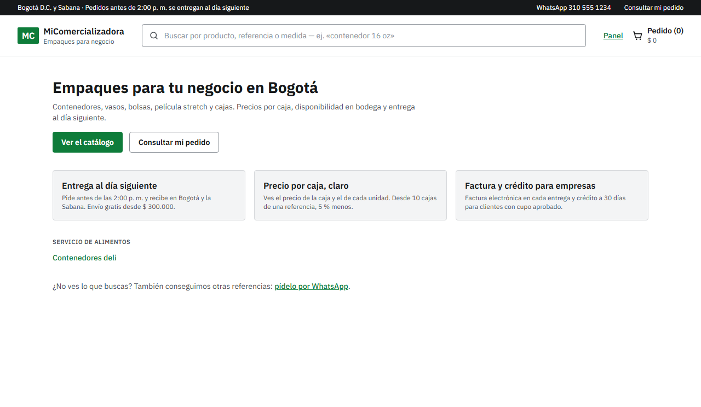
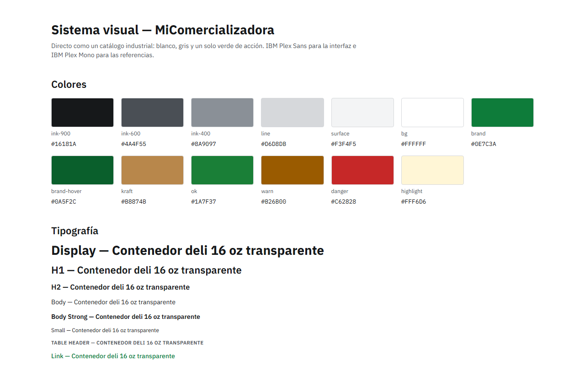
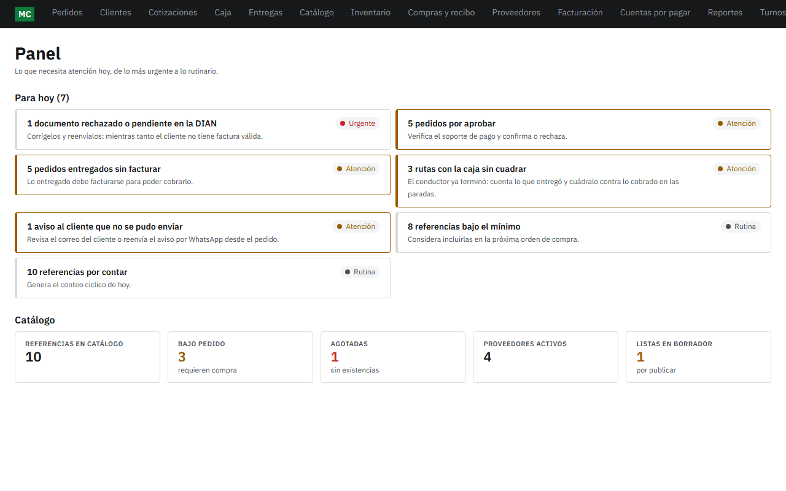
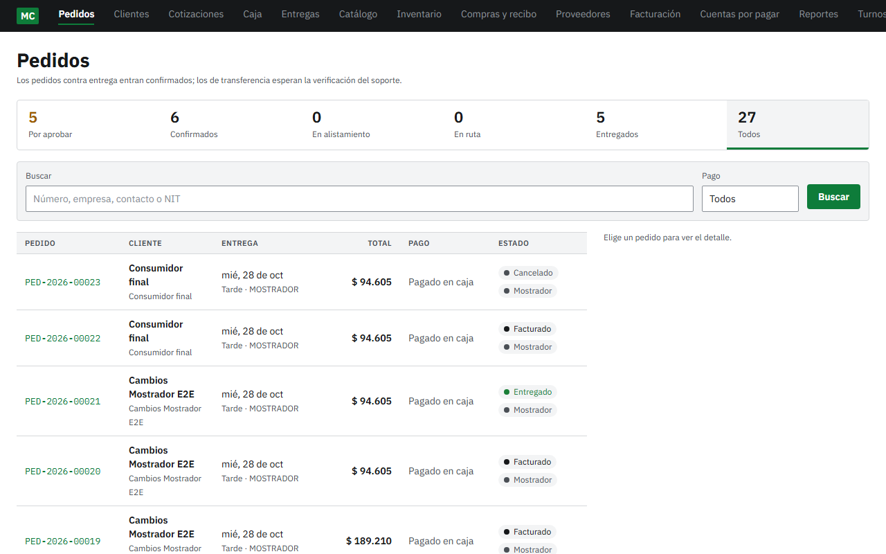
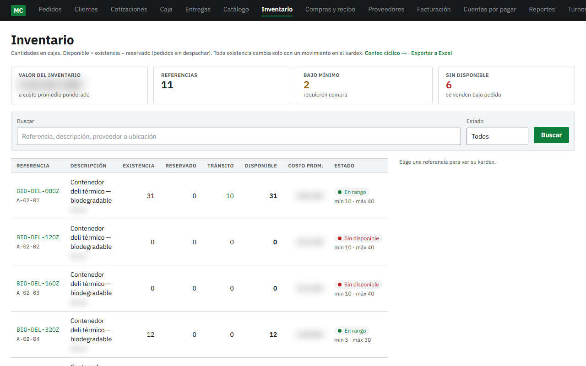
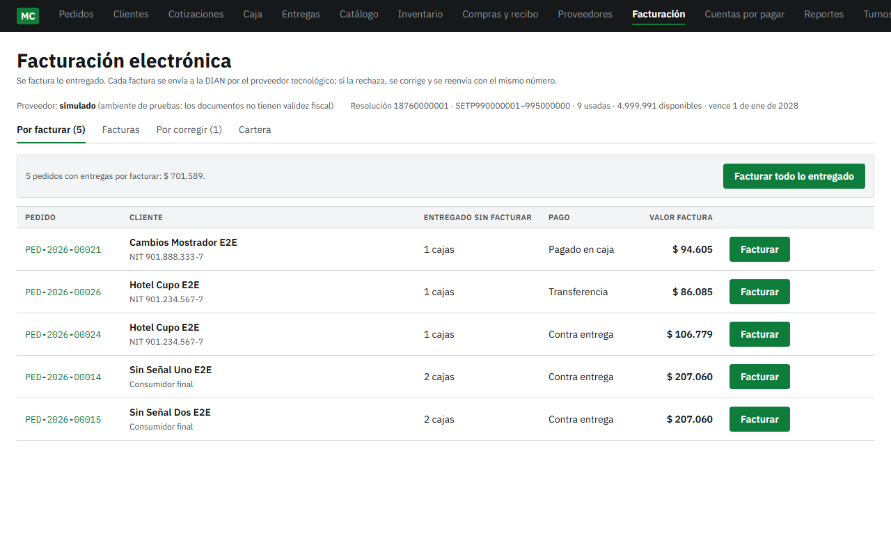
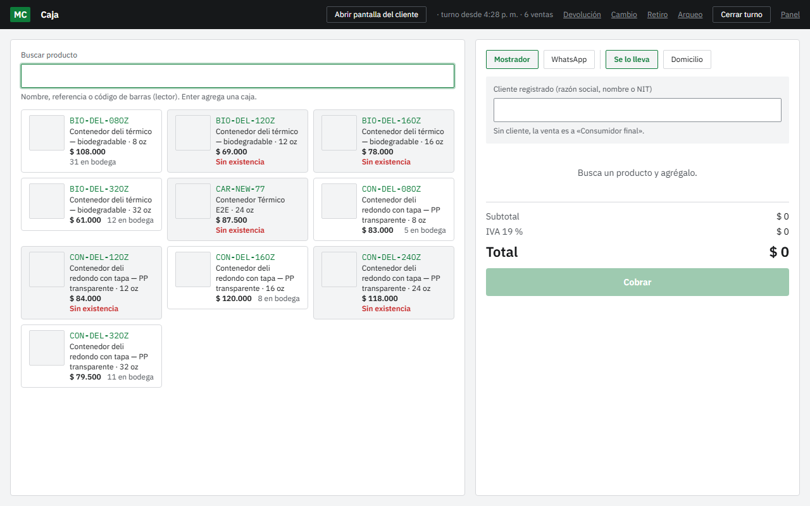
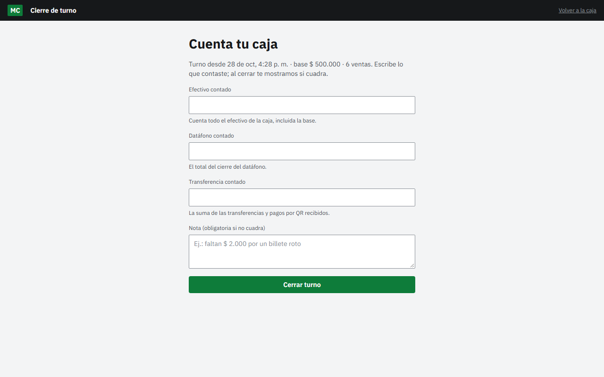
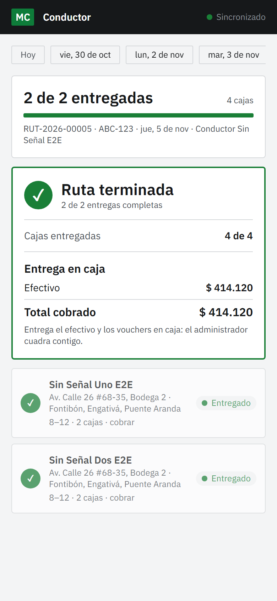

Caso de estudio · proyecto propio
De pedidos por WhatsApp a una plataforma B2B con factura electrónica
Fundé una comercializadora de empaques para restaurantes, hoteles e industria en Bogotá y la Sabana, y construí su plataforma. Un solo sistema para vender, despachar, cobrar y facturar ante la DIAN. Esta vez las reglas del negocio no las levanté de un cliente: las decidí yo, como dueño.
Construido · en preparación para pilotoEn 30 segundos
- Problema
- Pedidos por WhatsApp, inventario en Excel, cobros contra entrega difíciles de cuadrar y factura electrónica obligatoria ante la DIAN.
- Qué hice
- Fundé el negocio, levanté los requerimientos y decidí las reglas como dueño, diseñé las pantallas en Figma y construí la plataforma.
- Resultado
- 8 módulos, 15 pantallas y 471 pruebas automáticas. En preparación para piloto.
- Stack
- Next.js 16 · TypeScript · PostgreSQL · Prisma · Supabase · Tailwind · Vitest · Playwright · Docker
El problema
En este sector los empaques se compran por WhatsApp, las existencias se revisan en un Excel y se cobra contra entrega. Funciona mientras el volumen es pequeño. Después falla por tres lados a la vez:
Inventario en Excel
No sabe qué mercancía ya está comprometida con otro pedido: se promete lo que no hay.
Cobro contra entrega
Al final del día hay que cuadrar lo que salió de la bodega con lo que volvió en dinero.
Factura electrónica
No es opcional: la DIAN la exige en cada venta.
El fondo del problema: la mercancía y el dinero van por caminos separados. Resolver solo uno deja el cuadre manual donde estaba.
La idea de negocio
Empaques para restaurantes, hoteles e industria en Bogotá y la Sabana: un insumo que no puede faltar, donde decide quién responde mejor. La apuesta fue competir con orden.
Catálogo técnico
Especificaciones a la vista, no por chat.
Cotización en PDF
Sale del mismo sistema.
Pedido con estado
El cliente sabe qué le llega y cuándo.
Factura sin pedirla
Electrónica y automática.

Cómo levanté los requerimientos
Antes de dibujar una pantalla dibujé dos recorridos: el de la mercancía y el del dinero.
- Dos recorridos, 8 módulos Cada módulo es responsable de un tramo de esos caminos, no de una pantalla.
- Investigación de proveedores Sus precios cambian y tienen vigencia: de ahí salió el importador de listas.
- Reglas en lenguaje del negocio «El saldo a favor lo absorbe el primer cobro», no una instrucción técnica.
- 15 pantallas en Figma Con sistema de diseño propio, antes de programar ninguna.
- Proveedor de facturación Comparé Alegra, Siigo y Facture, y me quedé con Alegra.

Las reglas que decidí como dueño
En el sistema de CFDI las reglas las levanté de un cliente. Aquí las tomé yo, y si me equivoco el costo sale de mi propia caja.
Cambios en 5 días hábiles
Con el empaque sin abrir: vuelve a la bodega como mercancía vendible.
Venta que se hace, se factura
Sin excepciones: alineado con la DIAN por construcción.
El crédito nace apagado
Todos arrancan de contado; el crédito se habilita cliente por cliente.
El saldo a favor se aplica solo
Lo absorbe el primer cobro: nadie tiene que acordarse.
Cancelar no hace perder dinero
Lo ya pagado queda como saldo a favor, con la opción de devolverlo.
Escribir estas reglas antes del código no fue un trámite: fue diseñar el negocio.
Qué construí
8 módulos y 15 pantallas en unas dos semanas de desarrollo intensivo: Next.js 16 con App Router y TypeScript, sobre PostgreSQL con Prisma y Supabase, con Tailwind y Docker.
Venta
Catálogo técnico, cotización en PDF y pedidos con aprobación de crédito que reservan existencias.
Inventario y abastecimiento
Kardex, disponible frente a reservado, recibo en bodega, importador de precios con vigencias y cuentas por pagar.
Entrega
Rutas y app del conductor que funciona sin señal, con firma y foto.
Punto físico
Caja por turnos con cierre a ciegas, cambios y devoluciones con nota crédito.
Cobro y facturación
Cartera y facturación electrónica DIAN, hoy contra un proveedor simulado.
Panel de control
Lo que necesita atención hoy, empezando por lo urgente.







Decisiones técnicas y por qué
Reglas de dinero en funciones puras
Cada regla se prueba con sus casos límite, sin base de datos ni pantalla.
Bloqueos en la base de datos
Ahí se arbitra la concurrencia: nada se cobra ni se descuenta dos veces.
Entrega sin señal
Se guarda en el celular y se sincroniza sin duplicarse.
Enlaces firmados y límites de uso
Solo funciona el enlace que el sistema emitió.
Cómo dirigí la IA
Lo construí con Claude Code. La diferencia con el proyecto anterior: ya no uso un solo modelo para todo.
- Modelo según el riesgo Dinero, seguridad e integraciones van al más capaz; lo acotado, a uno más ágil.
- Reglas antes del código En el lenguaje del negocio, como en el caso de CFDI.
- Reviso y apruebo El criterio sobre qué se cobra y qué se factura es mío. Y aquí, también el dinero.
Calidad y resultados
471 pruebas automáticas en total, con revisión de accesibilidad con axe, y facturación electrónica funcionando de punta a punta contra un proveedor simulado.
Estado actual: construida y en preparación para el piloto. Todavía no está en producción.
Qué sigue
- Facturación DIAN real Conectar Alegra en lugar del proveedor simulado.
- Pagos en línea Con Wompi.
- Avisos Por correo y WhatsApp.
- Publicación y piloto Con clientes reales.
¿Tu operación vive en WhatsApp y Excel?
Es el mismo problema que estoy resolviendo para mi propio negocio.